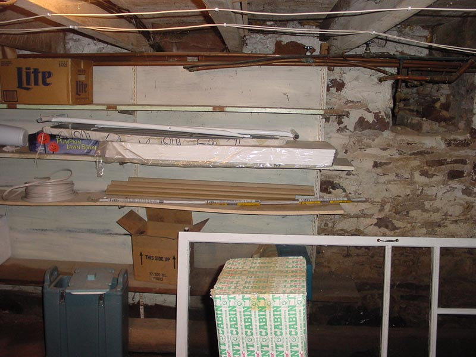

|  |
|
Here we see the fine decor is continued in a post-apocalyptic bachelor motif. Note the Ironing board that appears to never have been used. It is well placed amongst the unused construction supplies and old screen door. Items of note include an old cat-water dish, coolers, old halloween decorations and a case of bottles used for home-brew. On the lower right is a case that features the final bottle of buckwheat honey champgne style mead that has been aging for more than 5 years. [ Back to by the stairs | Look right at the hole in the wall? | Look right over at the workbench ] |